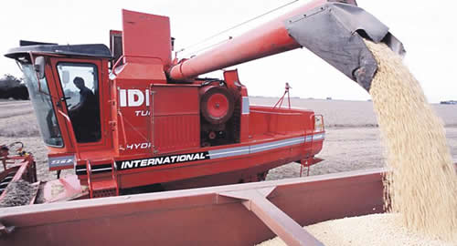

Real Chubut - Agencia de Noticias


Parar la baja de retenciones es suicida

Resulta llamativo como se habla de colocar tributos sin medir las consecuencias de los mismos en la actividad productiva, el trabajo pretende iniciar un debate con números en mano.
Se propone parar la baja de retenciones a la soja, pero en verdad nadie sabe qué precios se manejan a futuro, cuales son los costos del campo, y que podría suceder si dicha tributación persiste.
En este trabajo, tomaremos como supuesto que la suspensión de la baja de retenciones opera a partir del mes de septiembre de 2018, con estos recursos se espera que el gobierno cumpla con el objetivo fiscal comprometido con el FMI. De esta forma las retenciones que estaban en el 30% a diciembre de 2017, con una reducción del 0,5% quedarían en el 26% después de 8 meses de baja.
La cotización de la soja a mayo de 2019 que es la fecha cuando se cosecha la campaña 2018/19 (que se tendría que sembrar entre octubre y noviembre), se ubica en u$s 278,50 en el mercado de futuros Matba. Si detenemos la baja de retenciones el precio pasaría a ser de u$s 241, que surge de tomar la cotización soja mayo 2019 en chicago (u$s 325,74) y detraer la nueva alícuota (26%), si le sumamos un premio adicional, podríamos decir que el precio podría ubicarse en los u$s 250 la tonelada. Esto implicaría una merma para el productor de u$s 28,50 o bien una merma del 10%.
Vamos a la estructura de costos.
Como puede apreciarse en el cuadro anexo, si detenemos la baja de retenciones, en los campos de zona núcleo el productor perdería u$s 51 por hectárea. En otras zonas las perdidas serían mucho mayores ya que los rindes son mucho más bajos.
Si seguimos con el sendero de baja de retenciones actuales, el productor ganaría u$s 8,00 por hectárea, y había que detraer el impuesto a las ganancias, lo que reduciría dicha rentabilidad a u$s 5,20.
En la argentina se producen en condiciones normales unos 55 millones de toneladas, con esta realidad, la producción caería considerablemente. Sin embargo, si caería solo el 10% se recaudaría lo mismo que si no se bajan las retenciones. Es más, se recaudaría mucho menos, porque si se produce un 10% menos se transporta y se comercializan menos insumos que tienen tributos que engordan a la recaudación general.
En resumen, parar la baja de retenciones es suicida, porque:
Se produciría mucho menos y se recaudaría menos. Esto está probado, porque ya sucedió con el maíz y el trigo bajo el gobierno de Cristina Fernandez de Kirchner.
Ingresarían menos dólares a la Argentina.
Nadie sembraría para perder dinero. Los cálculos fueron realizados en la zona núcleo donde los rindes son los más elevados, en el resto del país en donde los rinden son inferiores a las 3 toneladas pro hectáreas, sembrar soja sería mucho más inviable.
El 70% del campo argentino lo trabajan arrendatarios, con lo cual la hipótesis que muchos están pensando y que diría que el dueño gana dinero, no es probable que ocurra.
El resultado dueño no contempla los pagos de impuestos inmobiliarios y tasas viales, y menos aún la tasa de ganancias del 35%. Dicho resultado comparado con la inversión realizada es ridículo.
Resulta confuso que en un país con tierra excedente se generen impuestos que desincentivan la producción. Deberían generarse incentivos para producir más de 55 millones de toneladas, no el camino inverso.
Si hay un impuesto excesivo a la soja, muchos productores harán otro cultivo que no tiene retenciones, como podría ser el caso del maíz. Con lo cual se perdería recaudación.
Hemos escuchado muchas propuestas de no bajar las retenciones, en ningún caso se acercaron estudios de costo. Ponemos en debate estos costos y rentabilidades, para poder intercambiar opiniones y enriquecernos con los comentarios.
El tipo de cambio alto no mejora la rentabilidad del sector, ya que muchos costos están dolarizados y otros aumentan en dólares, como es el caso del flete, combustible y otros insumos que se utilizan para sembrar. El alquiler es una suma fija de la producción, por ende, la suba del tipo de cambio no impacta.
Agradecemos la posibilidad de iniciar un debate con una hoja de cálculo, seguir predicando con la verbalización de las medidas sin medir los costos nos hace recordar al gobierno pasado, en donde por imperio de las necesidades del Estado, la agricultura, ganadería y lechería retrocedieron varios años su nivel de producción, aportaron menos fondos de los posibles, y generaron un quebranto generalizado en el sector agrícola industrial Argentino, y si no me creen miren las quiebras y convocatorias de los últimos años. Abogamos por mejorar la productividad, palabra que parece prohibida en la clase política, esperamos sus comentarios.
Fuente: Pagina 12